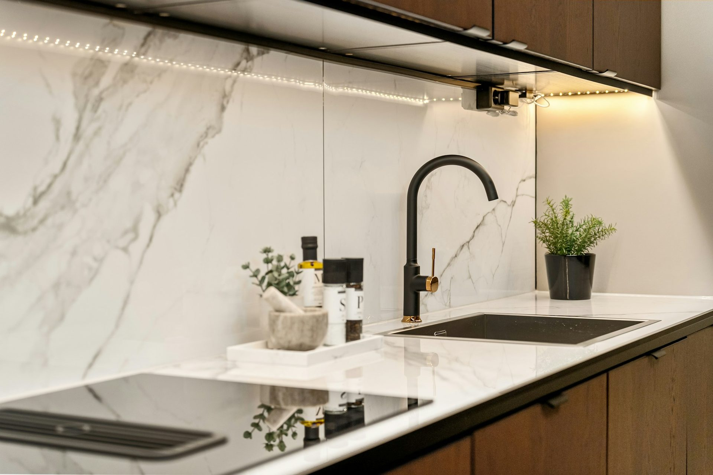

The style is the door.
The rest does not change.
Every kitchen here is built on the same 18mm moisture-resistant board, the same laser-bonded edging and the same Blum hardware. What you choose below changes what you see, not what holds it up.

Traditional
A door with a frame.
Every one of these is built on a panelled or profiled door. What separates them is the palette, the proportion and how much of the period they reference.

Hamptons
Coastal formality: panelled doors, a pale palette, a generous island.
Read the hamptons guide →Shaker
A flat panel in a square frame. The one that outlasts every trend.
Read the shaker guide →
French provincial
Profiled doors and soft colour, with two cues rather than six.
Read the french provincial guide →
Classic
Furniture proportions and visible hardware, everything else current.
Read the classic guide →
Transitional
Traditional form, contemporary restraint. The most asked for in Australia.
Read the transitional guide →
Modern farmhouse
Shaker bones with a lighter, cleaner hand.
Read the modern farmhouse guide →
Country
Built around one big surface, and for a back door that gets used.
Read the country guide →
Cottage
For a genuinely small room, where leaving things out is the design.
Read the cottage guide →
Federation
High ceilings, picture rails, and joinery you are not replacing.
Read the federation guide →
Victorian
Terraces and cottages: narrow rooms and very high ceilings.
Read the victorian guide →
Art Deco
Curves and geometry rather than ornament. Three decisions, not ten.
Read the art deco guide →
Mediterranean
Warm earth tones and texture, without the terracotta.
Read the mediterranean guide →Contemporary
A door with no frame.
Flat fronts, handleless or close to it. With no ornament to look at, the gaps between the doors become the design, which is why the carcass matters more here.

Contemporary
Flat, handleless, long runs. Nowhere for a bad gap to hide.
Read the contemporary guide →
Two-tone
Dark below, light above. The only free design decision you get.
Read the two-tone guide →
Coastal
Built for salt air as much as for the view.
Read the coastal guide →
Scandinavian
Pale timber, restraint, and light doing the work.
Read the scandinavian guide →
Japandi
Scandinavian warmth with Japanese discipline.
Read the japandi guide →
Industrial
Concrete, black steel and nothing pretending to be timber.
Read the industrial guide →Choosing one
Pick the house, not the photograph.
Most kitchens that look wrong look wrong because the style was chosen from a photograph of a different kind of house in a different kind of light. A Cotswolds country kitchen in Central Queensland reads as gloomy. A flat handleless run against VJ walls and three-metre ceilings reads as a different building bolted on.
The useful question is not which style you like in a magazine. It is which one your house is already asking for, and then how far you want to push against that. Our Queenslander guide works through one version of that problem in detail.
- 18mm moisture-resistant board
- Laser-bonded edging, no glue line
- Soft-close hinges and full-extension runners
- Cut to your room, not catalogue widths
- Flat packed or delivered assembled
Frequently asked
Questions about style
If your question is not here, call the studio. We would rather talk it through than have you guess.
Ask us directly →Does the style change the price?
The door does. The carcasses, edging and hardware are identical across every style and every collection, so what moves the price is the door range and the benchtop, not the look you are after.
Which kitchen style dates fastest?
Anything built on a strong colour or a current hardware finish. Shaker and contemporary have both lasted because neither has ornament to go out of fashion. If you intend to stay in the house, that matters more than what is current.
Can I mix styles?
Two-tone is a mix by definition and it works. Beyond that, mixing door profiles in one room rarely does. Pick one door and let the benchtop, handles and splashback carry the variation.
What suits a Queenslander?
Shaker, country and Hamptons all sit comfortably in a period Queensland house. Contemporary can work but needs care, because a flat handleless run against VJ walls and high ceilings can read as a different building.
Delivered assembled
The assembly is done
before it arrives.
Carcasses built square on a bench, Blum hardware fitted, doors hung and adjusted to even gaps. On site you are fixing finished cabinets to a wall, not building them on the floor. Our own team fits it in Central Queensland; your installer fits it anywhere else in Australia. Prefer to build it yourself? The same kitchen ships flat pack.

Long island, one delivery
Gloss doors, adjusted to even gaps before delivery
Concrete-look doors, matte black hardware

Your kitchen
Send us the dimensions.
We will draw it your way.
A fixed, itemised quote drawn to your room, in the style you want, flat packed or delivered assembled.